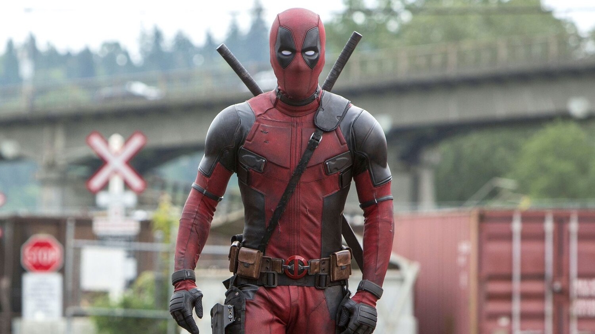

Deadpool

Quien es?
Deadpool es un personaje ficticio, mercenario, supervillano y antihéroe que aparece en los cómics publicados por Marvel Comics. Creado por el artista Rob Liefeld y el escritor Fabian Nicieza, Deadpool apareció por primera vez en New Mutants. Como un mercenario mentalmente inestable y desfigurado, Deadpool apareció originalmente como un villano en el cómic New Mutants, y más tarde en ediciones de X-Force. Desde entonces, el personaje ha protagonizado varias series en curso, y comparte títulos con otros personajes, como Cable.
Fuente de informacion:
WIKIPEDIATrailer oficial:
En esta parte se grabo la famosa y comica esena del puente en la pelicula:
Para mas informacion, CLICK AQUI